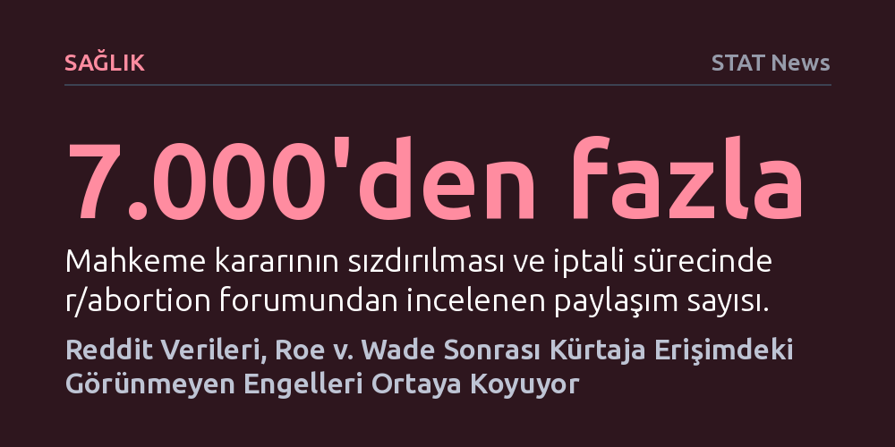

SAGLIK · STAT News · 2026-10-10
Reddit'teki 7 binden fazla paylaşımın analizi, kürtaj yasaklarının ardından posta gecikmeleri, platform güvensizliği ve yasal korkular gibi klinik verilerin yakalayamadığı engelleri ortaya koydu. Araştırma, yapay zekanın kullanıcı mahremiyetini çiğnemeden hassas sağlık krizlerini haritalandırabileceğini kanıtlıyor.
Klinik kayıtların göremediği sağlık krizlerinde, anonim internet paylaşımlarının yapay zeka ve sıkı mahremiyet protokolleriyle incelenerek sahadaki gerçek engellerin haritalandırılabileceğini gösteriyor.

2022 yılının baharında ABD Yüksek Mahkemesi'nin Roe v. Wade kararını iptal edeceği basına sızdığında, yaklaşık elli yıllık anayasal kürtaj hakkının sonuna gelindiği anlaşıldı. Kararın resmileşmesiyle birlikte birçok eyalette kürtaj anında yasaklandı veya ağır kısıtlamalara tabi tutuldu. Bu ani dönüşüm, üreme sağlığı hizmetlerine ihtiyaç duyan milyonlarca insanı derin bir belirsizliğin ve lojistik bir kaosun ortasında bıraktı.
Geleneksel halk sağlığı araştırmaları genellikle hastaneler, klinikler ve resmi sağlık kayıtları üzerinden veri toplar. Ancak kürtajın suç haline geldiği veya ağır yaptırımlarla karşılaştığı bir ortamda, insanların büyük bölümü resmi sağlık kurumlarına hiç başvurmadı. Resmi sistemin dışında kalan bu deneyimler, geleneksel klinik araştırmaların tamamen kör kaldığı geniş bir alan yarattı.
Halk sağlığı araştırmacısı Betsy Pleasants ve ekibi, bu kör noktayı aşmak için insanların anonim olarak deneyimlerini paylaştığı Reddit'teki r/abortion forumuna yöneldi. Mahkeme kararının sızdırıldığı, onaylandığı ve sonrasındaki ayları kapsayan dönemde paylaşılan 7 binden fazla gönderi, doğal dil işleme (NLP) yöntemleriyle tarandı. Hesaplamalı analiz, tartışmaları 55 ayrı tema altında sınıflandırdı.
Araştırma sadece algoritmalara bırakılmadı; elde edilen temalar araştırmacılar tarafından derinlemesine nitel okumayla tek tek doğrulandı. Böylece insanların yalnızca hangi konuları konuştuğu değil, karşılaştıkları engeller karşısında nasıl çözümler aradığı ve süreci duygusal olarak nasıl yönettiği de haritalandırıldı.
Elde edilen bulgular; yüksek maliyetler, uzun seyahat mesafeleri ve randevu yetersizliği gibi bilinen zorlukları teyit etmekle kalmadı, literatürde az bilinen kritik engelleri de gün yüzüne çıkardı. Posta yoluyla sipariş edilen kürtaj ilaçlarının gecikmesi, internetteki ilaç sağlayıcılarının güvenilirliğine dair şüpheler ve tıbbi destek ararken yasal yaptırımla karşılaşma korkusu en sık dile getirilen sorunlar arasındaydı.
Kullanıcıların paylaşımları, bu engellerin yarattığı yoğun tecrit, kaygı ve çaresizliği gözler önüne serdi. Resmi kliniklere ulaşamayan veya yakalanmaktan korkan birçok birey, gebeliği kendi imkânlarıyla sonlandırmak zorunda kalırken, doğru bilgiye ulaşmak için anonim forumlardaki akran desteğine bel bağladı.
Üreme sağlığı gibi cezai riskler barındıran hassas konularda çevrim içi verilerin kullanılması, ciddi etik sorumluluklar doğuruyor. Araştırma ekibi, kullanıcı kimliklerini korumak için doğrudan alıntılar yapmak yerine, benzer paylaşımları birleştirip yeniden kurgulayan ağır bir maskeleme yöntemi uyguladı. Üretilen kompozit alıntılar, intihal tespit araçları ve arama motorlarıyla sınanarak orijinal göndericilere geri iz sürülemeyeceğinden emin olundu.
Bu yaklaşım, yapay zekanın insani bağlamı ve mahremiyeti zedelemeden toplum sağlığı krizlerini inceleyebileceğini kanıtlayan bir model oluşturdu. Yasal kısıtlamaların araştırmayı zorlaştırdığı bir dönemde Pleasants, çalışmasını çevrim içi doğum kontrolü ve yanlış bilgi dinamiklerine doğru genişletmeye devam ediyor.